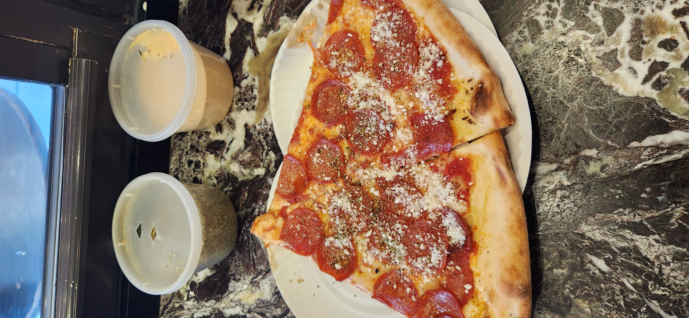
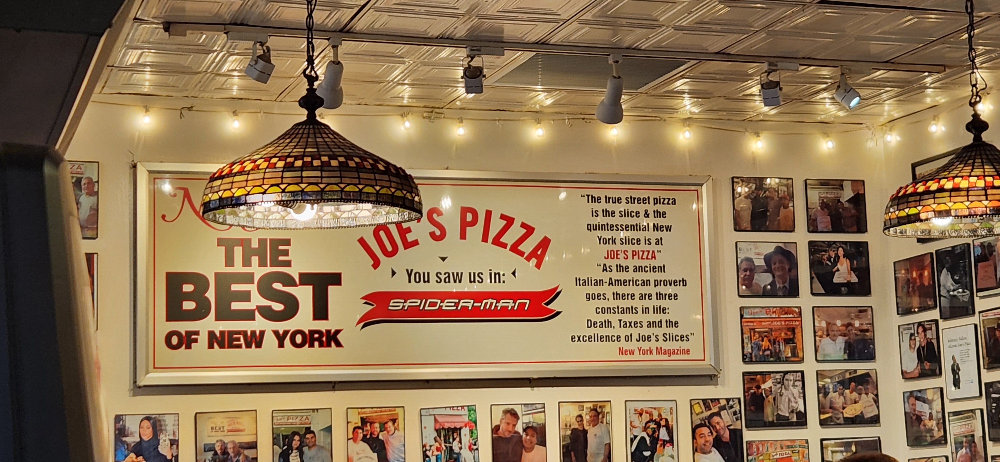
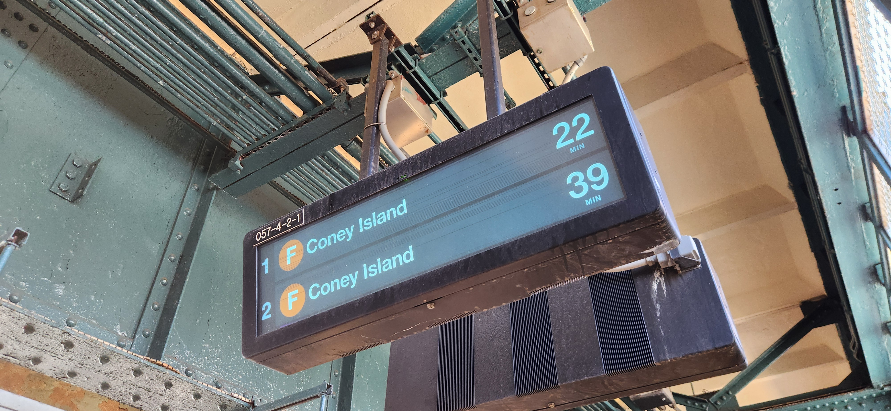
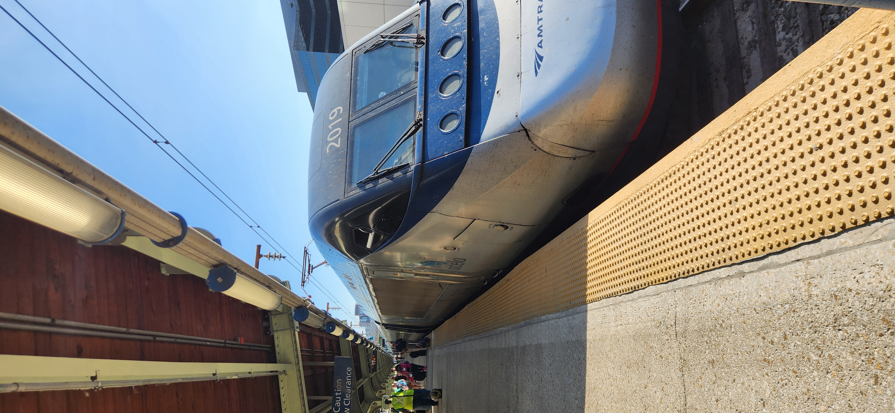

Transit travel–New York City
From July 24th to July 29th I took a vacation to New York City. As a transit enthusiast, this is the closest thing to a religious experience as you can get without requiring a passport for international travel. My last experience in a city with so many people and so much transit was my trip to Mexico City in 2017, but that trip had the significant caveat of being (1) a family trip and (2) entirely lacking cell service and Wi-Fi. This is the first experience I’ve had as an adult, travelling to somewhere I actively sought to visit, and so I do not judge it under the same light as previous trips.
Arriving in New York#
I flew in to JFK on my arrival to New York. The approach to the airport took our flight east across the Atlantic ocean, then north and west over Long Island. I could not help but remember the description of old seamen who wished to protect their home given in The Power Broker; looking out over the rows and rows of small houses, miles of highway and suburban development made me wonder what Long Island would have looked like not even 100 years ago. We landed at Kennedy in the early morning. The sun was out and I promptly took the AirTrain to the nearest subway station. My first NYC Subway train was an E train to Manhattan. I was immediately impressed by the quality of the announcements. In about 40 minutes, I arrived in midtown Manhattan, surrounded by the energy of Times Square. I don’t consider myself the world’s biggest fan of advertisements everywhere, but the sheer energy and bustle in Times Square makes me forget about it. Being there was awesome and gave me so much energy. Straight away, I knew what I had to do. It was shortly past 10 AM, so I went straight to Joe’s for a “breakfast” pizza. It was fantastic, just as I remember it being.
 (Figure 1: Street pizza at Joe’s.)
 (Figure 2:
NY Furs#
Fur Ride#
During my trip, I also had the pleasure of attending three events coordinated by the NY Furs. The first of these was a fur ride: many furries met at Jay St-MetroTech station in Brooklyn and rode an F train to W-8 St-NY Aquarium station. Throughout the ride, we got to interact with the local public and observe the rail infrastructure (we saw an R211T in a railyard!)
Fur Walk#
Immediately after the fur ride, we walked along to a park in the Coney Island area to meet up with the Fur Walk participants. The Fur Walk was a several hours-long event where a march of furries proceeded to walk much of the length of the Coney Island Beach Boardwalk. The reception we got was surreal: many people candidly filmed us as we walked past them on the boardwalk, others wanted to take pictures with us.
Fur Bowl#
The last event of the day was a Furbowl held at Round1 in Long Island. Getting to this event took a bit more work: I had to take the Long Island Railroad to Hicksville (incredible name) to get there, and the ride was somewhere from 40 minutes to an hour and change. The walk from the station was not too bad, but it did compare unfavorably to the experience of walking to somewhere in Manhattan, Brooklyn, or Queens.
Trip to Washington DC#
While I was on the Northeast Corridor, I thought it would be a great opportunity to take the Acela and Northeast Regional services to somewhere I had never been. I opted to go to Washington DC, the terminus of each of these services.
Acela: Moynihan Train Hall -> Washington Union Station#
I woke up very early to take a 5:25 AM Acela (much cheaper than any other option), but I arrived too early to enter Moynihan Train Hall, which opens officially at 5 AM. I had to ride trains around to kill time and succumbed to the heat in the subway stations, needing to change my shirt before boarding the train. This is my biggest complaint about the subway: nearly every station has no AC, and many have very little if any ventilation. The stations themselves are quite small and dingy, but I think that gives them character, so I can forgive it.
I boarded the Acela and realized that my seat was backwards-facing. It was a bit of a bummer to find out, but it wasn’t the end of the world. There was still plenty of legroom and the seats were comfortable. I spent considerable time in my seat but also standing in the cafe car, which gave me a lovely sort of panoramic view of the northeast corridor–allowing me to really absorb the speed at which I was travelling toward DC.
(Picture from the Cafe car)
The train took some three hours and change to arrive at Washington Union Station. I only packed a small suitcase and my backpack, so once we arrived I quickly departed the train, but not before I took some pictures!!
 (Figure #: Acela exterior view)
In Washington DC#
My trip to Washington DC was quite short: only a day, but I was determined to do at least a few things. The weather was also very uncooperative, with a high of 93°F and around 50% humidity. Walking through the National Mall, bereft of shade and weighed down by my heavy backpack, I found myself succumbing to the heat quite quickly.
I did get to see the Capitol building and the Lincoln Memorial from a distance! I did not get to see the White House, though under the circumstances, I am not totally unhappy with this outcome.
(Insert picture of Capitol building and Lincoln Memorial.)
My room for the day was a 15 minute walk from Tysons station (on the Silver Line). Being in Washington DC after spending time in New York City felt bizarre.
Northeast Regional: Washington Union Station -> Moynihan Train Hall#
Closing Thoughts#
This was one of my favorite experiences travelling that I have had in my entire life. I am very thankful for the opportunity for free rooming that I received while I was in NYC and in DC.